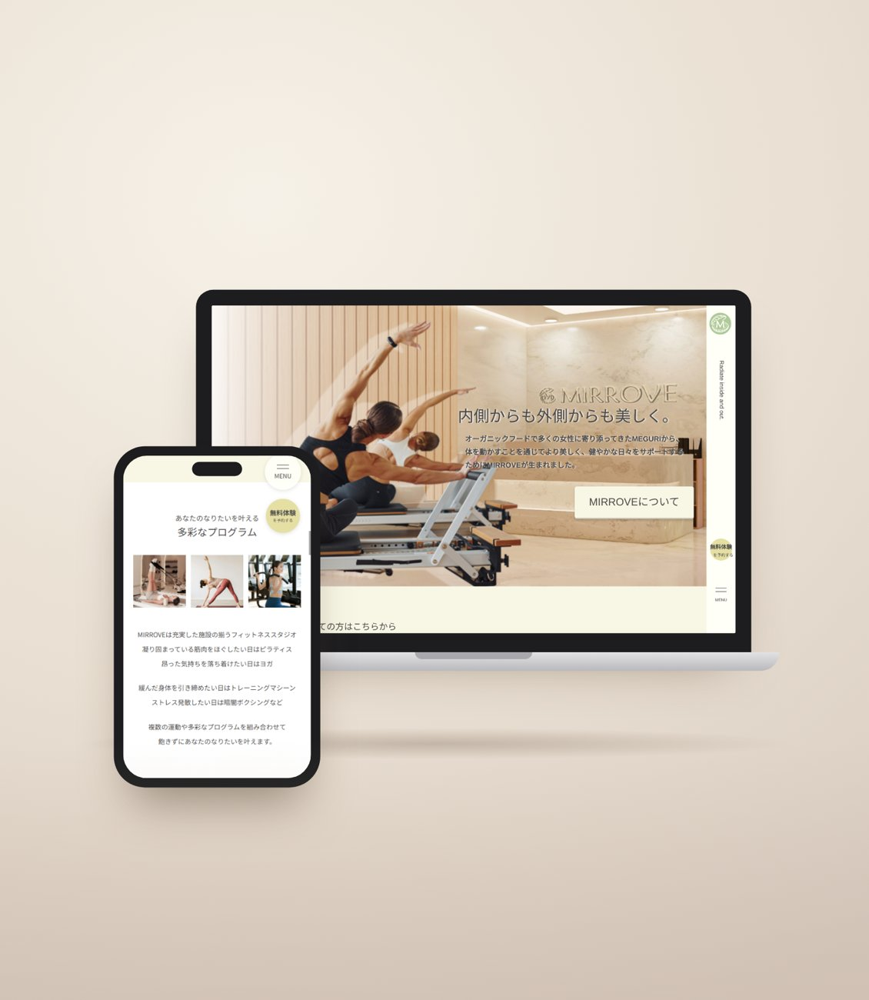
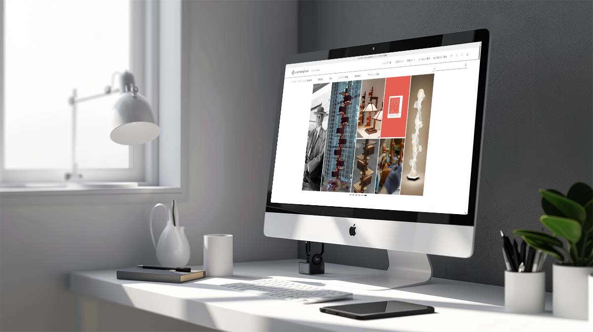
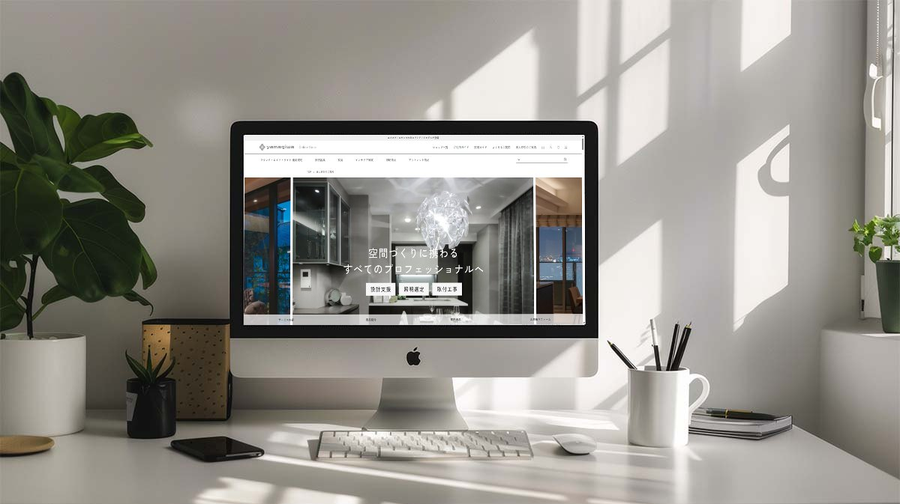
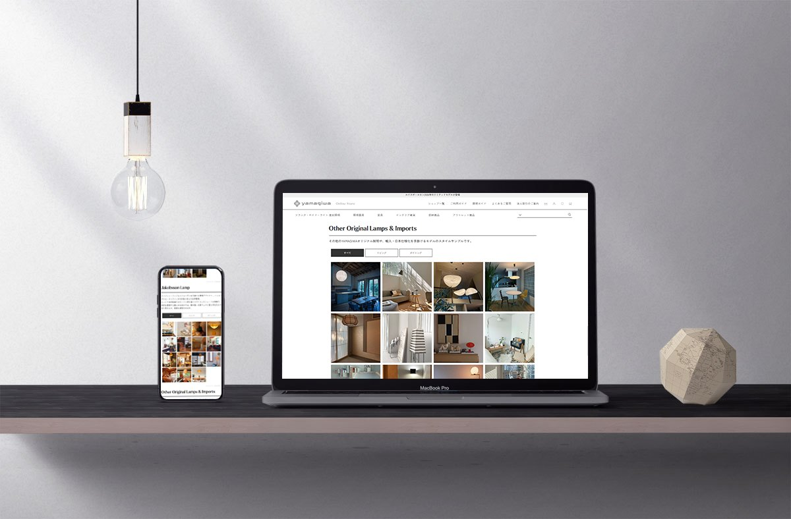

As Isこれまで
ECサイトの運営を通じて、売上向上や業務効率化に向けた企画・改善に取り組んできました。
さらに職業訓練でデザインとコーディングを学び、企画から制作・運用までを見通せる視点を養いました。
- 01
実務を通じて、課題解決に取り組む
ECサイトのリニューアルでは、購入ステップの見直しを中心に、社内の関係部署や制作会社との調整を担当。法人向けサイトの改善、UGCの導入、受注業務の効率化にも取り組みました。
- 02
企画から制作まで、理解を広げる
職業訓練で、企画・デザイン・コーディングを学びました。チーム制作ではページ間の調整や進捗確認、メンバーの技術サポートを担当。自主制作でも2つのWebサイトをコーディングし、公開しています。
- 03
制作と運用をつなぎ、成果へ
EC運営の経験と制作工程への理解を生かし、公開後の成果まで考えられるWebディレクターを目指しています。
Profile
心が動く
その理由を考える

美しいものや、思わず誰かに伝えたくなるものに出会うと、なぜ心を惹かれたのか、その理由まで考えてしまいます。誰に、何を、どのように伝えるか。相手の立場や背景を理解し、さまざまな人の想いをつなぎながら、心を動かす体験を形にしたいと考えています。
Career職務経歴
- 照明メーカー ECサイト運営自社EC運営、コンテンツ企画、購買導線改善、制作ディレクション。Shopify移行のプロジェクトリーダー、法人向けサイト改善、UGC導入、受注業務の改善
- AIの独学AIを独学で学習
- 職業訓練（株式会社アルデザインカンパニー）Illustrator・Photoshop・HTML/CSS・UI/UXを学び、Webサイト・広告・パッケージを制作。
2026年12月修了予定
Strengths強み
Skillスキル
- Design
- Photoshop／Illustrator／InDesign／Canva
- Coding
- HTML／CSS／JavaScript
- EC
- Shopify／W2Commerce
- Analytics
- GA4／Search Console／ユーザーローカル
- SEO
- キーワードプランナー／ラッコキーワード／Googleトレンド
- Ads
- Google広告／Meta広告／楽天RPP／Yahoo!アイテムマッチ
- Office
- Excel／PowerPoint／Word
- Business
- Outlook／Teams／ChatWork／スプレッドシート
- Automation
- RPAロボパットDX
- AI
- ChatGPT／Gemini／Claude
01BUSINESS
成果を届ける
EC運営で取り組んだ4つの改善事例を紹介します。購買導線の見直し、法人向けサービスの改善、UGCの活用、受注業務の効率化を通じて、売上向上と運用負荷の軽減に取り組みました。

実務
01ECサイトリニューアル
約＋500万円
月商の売上向上に寄与／カート離脱率 80%→76%／購入ステップ 8→4
2024年11月リニューアル／売上は2025年1月・2月の各月を前年同月と比較
既存カートの購入ステップの多さや高い離脱率を課題と捉え、Shopifyへの移行を推進。社内の関係部署と制作会社を調整し、購入ステップを8から4へ削減するなど、購入手続きの改善に取り組みました。
READ MORE →

実務
02法人向けサイト改善
見積件数／約2倍
成約金額 約1.7倍／2023年度実績・2022年度比
法人顧客からの問い合わせ内容を分析し、導入実績や短納期対応に関する情報を整理。実績写真の充実と見積もりフォームへの導線改善により、顧客が必要な情報を確認しやすいサイトを目指しました。
READ MORE →

実務
03ユーザー生成コンテンツの導入
約1.2倍
対象商品の売上／2024年度・2023年度比
照明を実際の住空間に設置した写真を活用し、購入後の使用イメージを伝えるUGC施策を企画。商品ページから使用事例を確認できる導線を整え、購入検討時の判断材料を充実させました。
READ MORE →

実務
04受注業務の改善
01 受注一元管理
約2時間／日 削減
02 発送番号入力の自動化
120分→30分
自社EC・楽天市場・Yahoo!ショッピングで異なる受注データの項目を整理し、スプレッドシートで一元化。IT管理部門と連携して基幹システムの登録項目との整合性を確保し、RPAによる入力自動化につなげました。
READ MORE →
02WEB DIRECTION
行動まで届ける
職業訓練で制作したチーム作品と自主制作サイトを紹介します。企画・情報設計・デザイン・コーディングを通じて、目的に合わせたWebサイト制作に取り組みました。
03CREATIVE
印象を届ける
キービジュアル、ロゴ、広告・印刷物、パッケージの制作作品を紹介します。ターゲットや使用場面を踏まえ、伝えたい印象や目的に合わせて、配色・書体・モチーフを設計しました。
KV・ロゴKey Visual / Logo


プリントメディアFlyer / Poster / Package
04PHOTOGRAPH
瞬間を切り取る
光の入り方や構図、空間の見せ方を意識して撮影した写真です。ECの実務で担当した商品・空間の撮影と、個人で撮影した作品を掲載しています。画像をクリックすると拡大して見られます。
BUSINESS実務撮影
照明やインテリア空間を対象に、商品の魅力や空間の雰囲気が伝わる構図を意識して撮影しました。
PRIVATE個人撮影
日常や旅先で出会った風景を、光や色彩、構図を意識しながら撮影しています。
To Beこれから
企画から制作、公開後の改善まで。
これまで培ってきたEC運営の経験と、デザイン・コーディングの知識を生かし、ユーザー体験と事業成果の双方を考えられるWebディレクターを目指します。
- 01
数字と現場の声から、課題を捉える
売上やアクセスの数字と、問い合わせや現場の声の両方から、取り組むべき課題を決めます。
- 02
制作への理解を生かし、人と仕事をつなぐ
デザインとコーディングの経験を生かして制作側の業務を理解し、関係者と認識を合わせながら進行します。
→ MIRROVE
- 03
公開後も検証を重ね、改善につなげる
リリースで終わらせず、数字を確かめて次の改善につなげ、運用の負担も軽くします。